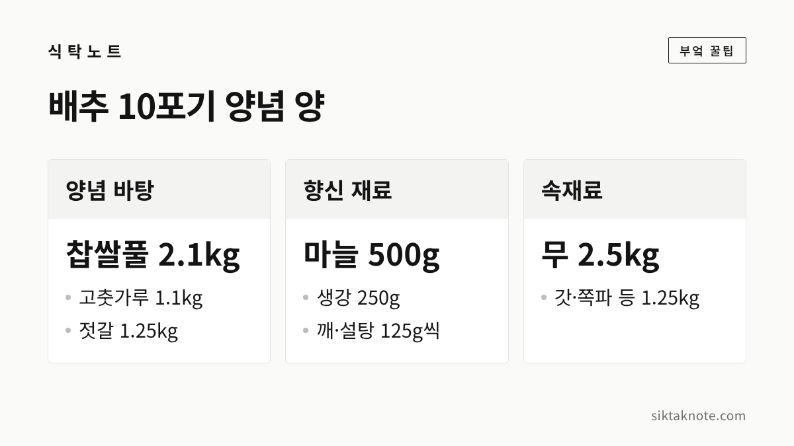
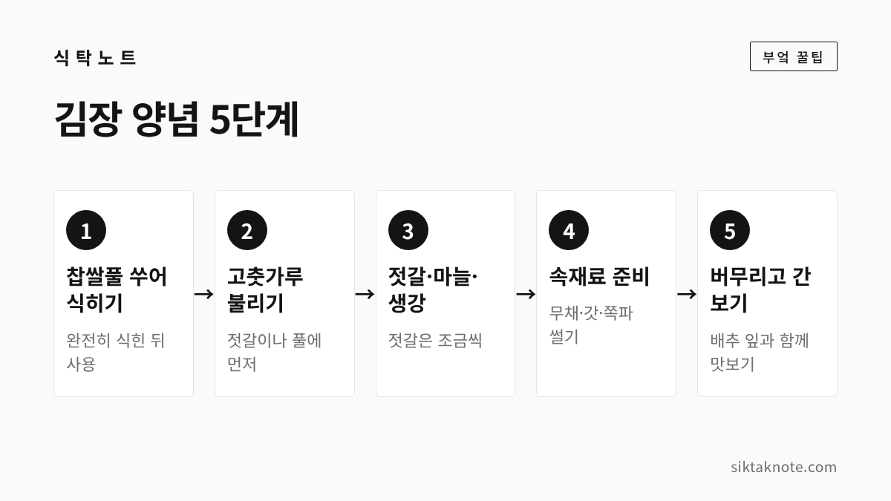
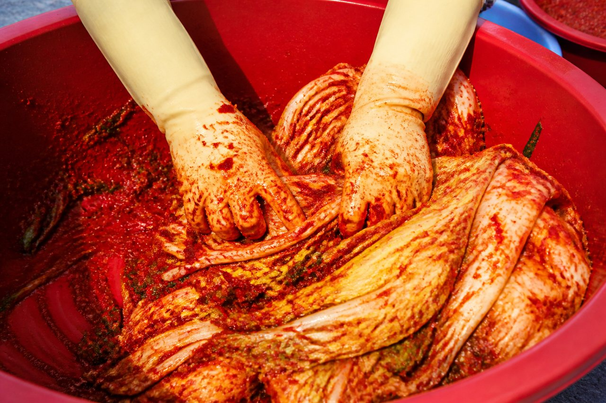

김장 양념 만드는 법 5단계 — 찹쌀풀부터 버무리기까지

3줄 요약
- 김장 양념은 찹쌀풀 쑤어 식히기, 고춧가루 불리기, 젓갈·마늘·생강 넣기, 속재료 준비, 버무리기 순서로 만듭니다.
- 농촌진흥청 배합을 배추 10포기로 환산하면 고춧가루 1.125kg, 젓갈 1.25kg, 마늘 500g, 생강 250g쯤 되어요.
- 양은 지역과 집마다 달라서, 젓갈은 조금씩 넣어 가며 절인 배추와 함께 간을 보시는 게 좋습니다.
김장은 배추를 절이는 것만큼 양념 만드는 일도 만만치 않은데요. 재료가 많다 보니 무엇부터 해야 하는지 헷갈리기 쉽습니다. 이번에는 양념을 다섯 단계로 나눠 순서대로 적어 보았습니다. 배추 절이는 법은 김장 배추 절이는 법에 따로 있으니, 여기서는 절인 배추를 물에 빼 두었다는 데서 시작합니다.
배추 10포기에 필요한 양념은 이만큼입니다
양념을 얼마나 만들어야 하는지가 가장 궁금하실 텐데요. 먼저 숫자부터 보겠습니다. 농촌진흥청이 2013년 소개한 김치종합양념소 배합은 절임배추 50kg 기준으로 고춧가루 2.25kg, 마늘 1kg, 생강 500g, 찹쌀풀 4.25kg, 젓갈 2.5kg, 깨와 설탕 각 250g이었습니다. 같은 해 청양군 농업기술센터도 이 배합을 3.5kg짜리 배추 20포기 기준으로 소개하면서 무 5kg, 갓·미나리·청각·쪽파 같은 채소 2.5kg을 더했다고 보도되었어요(2013년 아주경제). 이 숫자를 반으로 나눈 것이 아래 표입니다.
| 재료 | 배추 10포기 기준 |
|---|---|
| 고춧가루 | 1.125kg |
| 찹쌀풀 | 2.125kg |
| 젓갈 | 1.25kg |
| 마늘 | 500g |
| 생강 | 250g |
| 깨, 설탕 | 각 125g |
| 무 | 2.5kg |
| 갓·미나리·청각·쪽파 등 | 1.25kg |

위 양은 어디까지나 공공기관이 소개한 한 가지 배합을 환산한 값입니다. 우리 집 배추가 크거나 작으면 그만큼 늘리고 줄이시면 됩니다. 국립농업과학원의 농사로 영상 자료에서는 완성한 양념을 절인 배추 1kg당 220g쯤 쓰는 것으로 소개하고 있어서, 양념이 모자라거나 남지 않게 어림해 보는 데 도움이 됩니다.


1단계, 찹쌀풀을 쑤어 식힙니다
찹쌀풀은 양념이 배추에 잘 붙게 해 주는 바탕이라 가장 먼저 만들어 둡니다. 농사로 자료에서는 찹쌀가루와 물을 1대 9로 잡고, 눌어붙지 않게 저어 가며 묽어질 때까지 끓이라고 안내했습니다. 이 비율로 계산하면 풀 2.1kg쯤을 얻으려면 찹쌀가루 210g 안팎에 물 1.9kg쯤이 들어가고, 끓으며 줄어드는 물이 있으니 물은 조금 넉넉히 잡으셔도 좋겠습니다.
중요한 건 식히는 일이에요. 2012년 전북도민일보에 실린 남원 마을 김장 이야기에는 찹쌀풀을 김장 하루 전에 끓여 식혀 두고, 뜨거울 때 넣으면 고춧가루 맛이 떨어진다고 적혀 있습니다. 넓은 그릇에 펼쳐 두면 빨리 식고, 풀이 식는 동안 젓갈과 채 썬 무는 상온에 두지 말고 냉장고에 넣어 두라는 보도도 있었습니다(2026년 위키트리).

2단계, 고춧가루를 불립니다
고춧가루는 마른 채로 넣기보다 먼저 촉촉하게 불려 두면 색이 고르게 퍼지고 양념이 부드러워진다고 합니다. 불리는 방법은 집마다 다릅니다. 2011년 서울시 농업기술센터 전통음식교육에서 김장김치기술보유자 조선식 선생은 멸치액젓과 새우젓에 고춧가루를 불리라고 했고(하이서울뉴스), 남원 마을에서는 멸치액젓에 고춧가루를 버무린 뒤 찹쌀풀로 농도를 맞췄다고 합니다.
불리는 시간을 몇 분으로 정해 둔 공식 자료는 찾지 못했습니다. 고춧가루가 수분을 충분히 머금어 뭉침 없이 촉촉해질 때까지 두시면 됩니다. 남원 이야기에서는 김장용 고춧가루를 굵게 빻은 것으로 쓴다고 했으니, 산 고춧가루가 어떤 굵기인지도 한 번 보세요. 고춧가루를 얼마나 사 두고 어떻게 두어야 하는지는 고춧가루 보관법에 적어 두었습니다.

3단계, 젓갈·마늘·생강을 넣습니다
바탕이 만들어졌다면 향을 내는 재료를 넣을 차례입니다. 농사로 배합에서는 절인 배추 5kg 기준으로 젓갈 250g, 마늘 100g, 생강 50g이었고, 앞의 표는 이 비율을 10포기로 옮긴 거예요. 마늘은 다지거나 갈고, 생강은 마늘보다 적게 넣는 편입니다. 남원에서는 마늘과 생강을 절구에 찧어 넣으면 맛과 향이 좋아진다고 했어요.
젓갈은 한꺼번에 다 붓지 않으시는 게 좋겠습니다. 절인 배추에 이미 소금기가 들어 있어서 젓갈을 많이 넣으면 짜질 수 있거든요. 2026년 위키트리 보도에서도 절인 배추의 간을 보며 조금씩 넣으라고 안내했습니다. 남원 마을은 마지막 간을 새우젓으로 맞춘다고 하니, 처음에는 기본 양만 넣고 나머지는 4단계와 5단계를 거치며 보태는 방식이 안전합니다. 다진 생강은 미리 얼려 둘 수 있으니 생강 보관법과 마늘 보관법을 참고해 주세요.

4단계, 무채·갓·쪽파 속재료를 준비합니다
양념에 섞어 배추 사이사이에 넣는 속재료는 무, 갓, 쪽파, 미나리 같은 채소입니다. 농사로 자료에서는 이런 부재료의 양이 배추의 20% 정도이고, 무는 채 썰고 미나리·쪽파는 5cm 길이로 썬다고 했어요. 서울시 교육에서는 갓과 쪽파를 4cm로 자르라고 했으니 길이는 취향에 맞추셔도 됩니다.
무채는 양념에 섞기 전에 고춧가루를 먼저 묻혀 빨갛게 물들이는 순서가 서울시 교육과 2009년 레이디경향 레시피에 공통으로 나옵니다. 이렇게 하면 무채에 색이 고르게 입혀집니다. 김장용 무를 사 두셨다면 무 보관법을 보시고, 겨울 김치에는 파보다 갓을 더 넣으면 톡 쏘는 맛이 산다는 설명도 있었습니다.
5단계, 버무리고 간을 봅니다
모든 재료를 한 그릇에 모아 버무릴 차례입니다. 농사로 순서는 양념의 일부로 부재료를 먼저 버무려 속을 만들고, 나머지 양념을 배추에 고루 바른 뒤 속을 잎 사이사이에 넣고 겉잎으로 감싸 김치통에 담는 것입니다.

간은 양념만 떠먹어 보기보다 절인 배추 잎에 양념을 얹어 같이 맛보시는 게 좋겠습니다. 배추의 짠 정도에 따라 같은 양념도 다르게 느껴지거든요. 싱거우면 젓갈을 조금씩 더하고, 간이 세다 싶으면 속재료를 조금 늘려 보시기 바랍니다. 배추를 짜게 절였다면 김장 배추 절이는 법에서 말씀드린 대로 헹굴 때 소금기를 더 빼는 쪽이 낫습니다.
담근 뒤에는 윗부분을 우거지나 비닐로 덮어 공기와 닿지 않게 두는 것이 좋다고 농사로 영상에서 안내하고 있습니다.
집마다 지역마다 다릅니다
같은 김장 양념이어도 재료와 양은 집마다 다릅니다. 서울시 교육에서는 양파를 푹 끓인 물로 찹쌀풀을 쑤고 매실청을 넣었고, 남원 마을에서는 청각을 넣고 새우젓으로 간을 맞췄습니다. 2009년 레이디경향 레시피는 까나리액젓과 조개젓, 실고추를 썼어요. 젓갈 종류가 다르면 맛도 달라지는 건 당연한 일이죠. 어느 쪽이 정답이라고 하기는 어렵습니다.
그래서 위의 양은 출발점으로 삼고, 가족이 익숙한 맛에 맞춰 조금씩 바꾸시면 됩니다. 처음이라면 이번 김장에서 쓴 양과 맛을 적어 두었다가 다음 해에 조절하시는 것도 방법입니다. 양념은 찹쌀풀, 고춧가루, 젓갈과 향신 재료, 속재료, 버무리기와 간 보기까지 다섯 단계만 순서대로 따라가면 크게 어긋나지 않습니다.